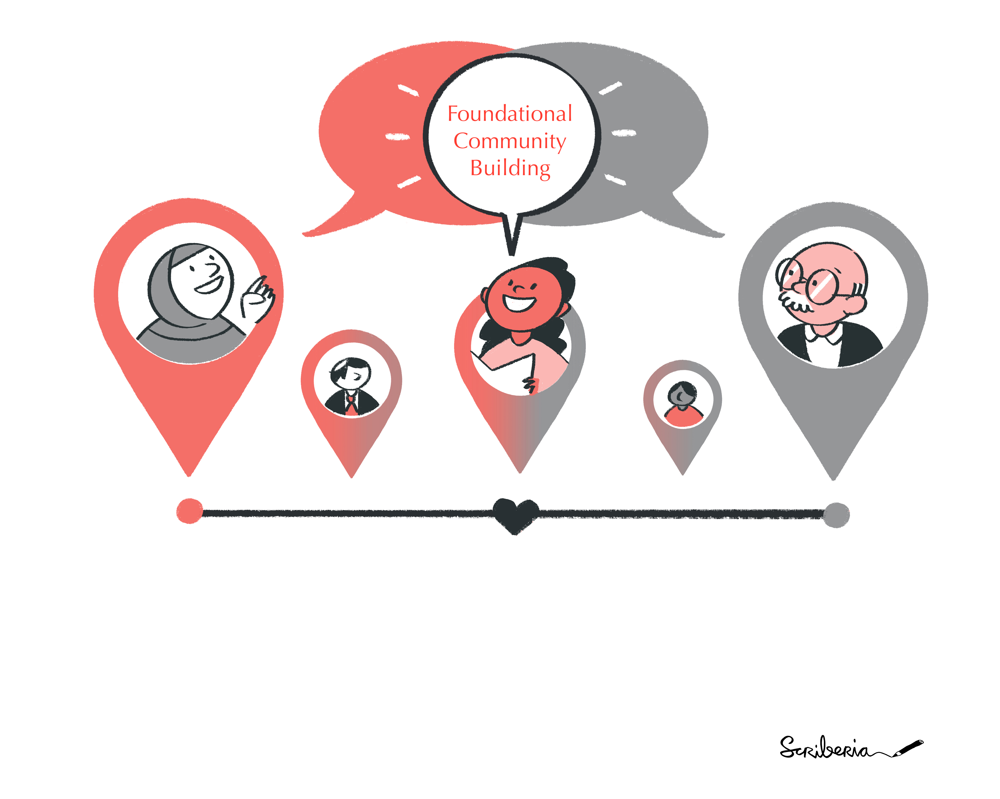

Foundational Community Building
DRAFT PRE-ALPHA VERSION FOR ONLINE WEBPAGE
We cannot expect to engage with and refer to communities unless we first support them to be built from the inside out. ‘Community’ should be understood as a verb, not a noun, in other words, it is the consequence of our efforts. - Cormac Russell, Rikindling Democracy
Building communities with a sense of purpose and belonging
Community building is a process of enabling members in our communities to move from the position of spectators or users to developers and leaders in the project. Community managers or members in community coordination roles identify and build meaningful pathways for everyone to gain access to the skills and resources they need to participate in the community. They carry out project-specific technical roles alongside emergent and often non-quantifiable and invisible responsibilities in the community needed to make the quality and visible work of their communities effective. These background works involve approaches for collaboration, maintenance, acknowledgement and capturing the impact of community members’ work - skills that can be learned and systematically applied to all research work.
This training material has been designed to discuss foundational skills through four modules, each designed for short-form project-based discussion:
- Module 1: 🚧 Community foundation: What is your community’s story, who started it, what was the reason/purpose and where do we want to take it?
- Module 2: 🔤 Community of Practice basics: Purpose and outcomes, stakeholder mapping, roles and responsibility documentation and communication channels
- Module 3: 🗺 Community engagement: information mapping, a mountain of engagement, incentives and value-exchange
- Module 4: 📜 Creating and communicating your community charter: vision, mission, milestones, roadmap, ways of working
Contact
For any organisation-related queries or concerns, you can directly reach out to me, Malvika Sharan, by emailing msharan@turing.ac.uk. You can find more about me via my homepage, and follow me on Twitter for rare moments where I share something (which has reduced significantly in 2023!)
License and credits
This work is licensed under the MIT license (code) and Creative Commons Attribution 4.0 International license (for documentation). You are free to share and adapt the material for any purpose, even commercially, as long as you provide attribution (give appropriate credit, provide a link to the license, and indicate if changes were made) in any reasonable manner, but not in any way that suggests the licensor endorses you or your use, and with no additional restrictions.
All referenced resources when reused should be attributed correctly.